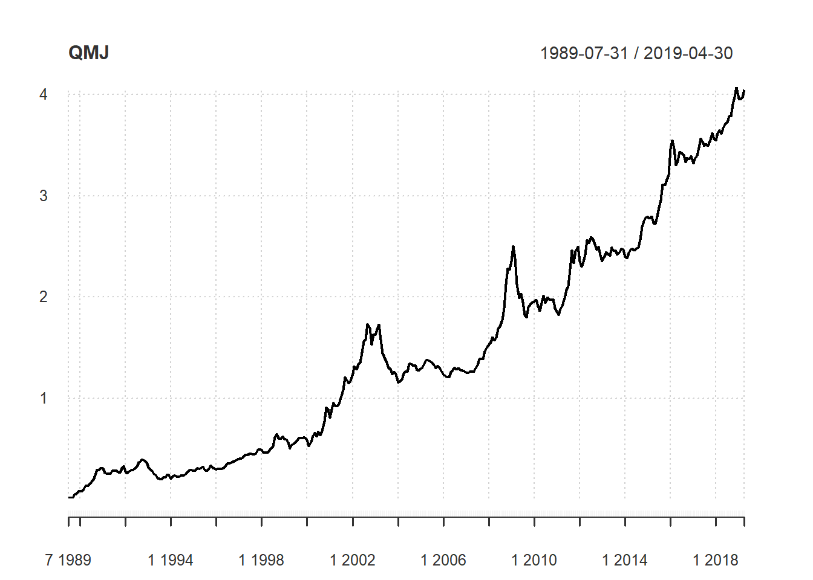
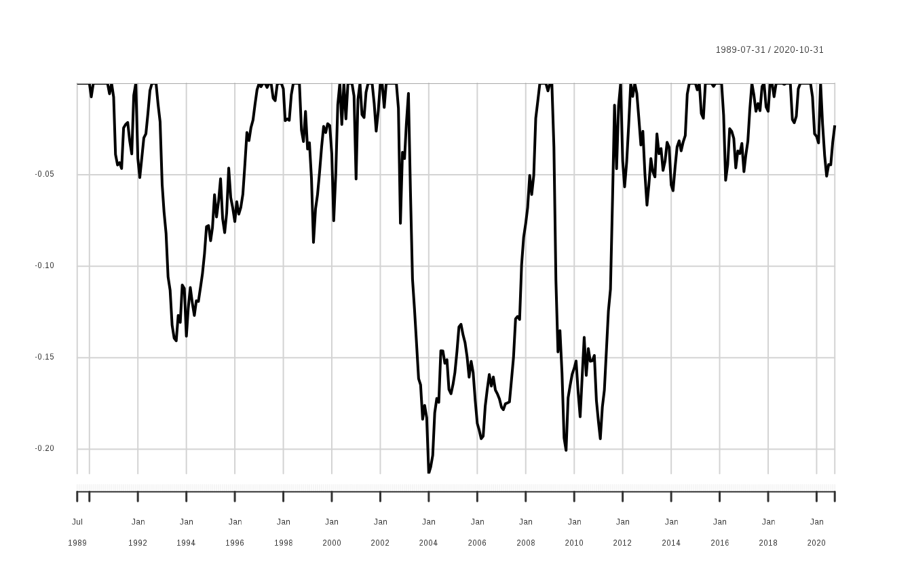
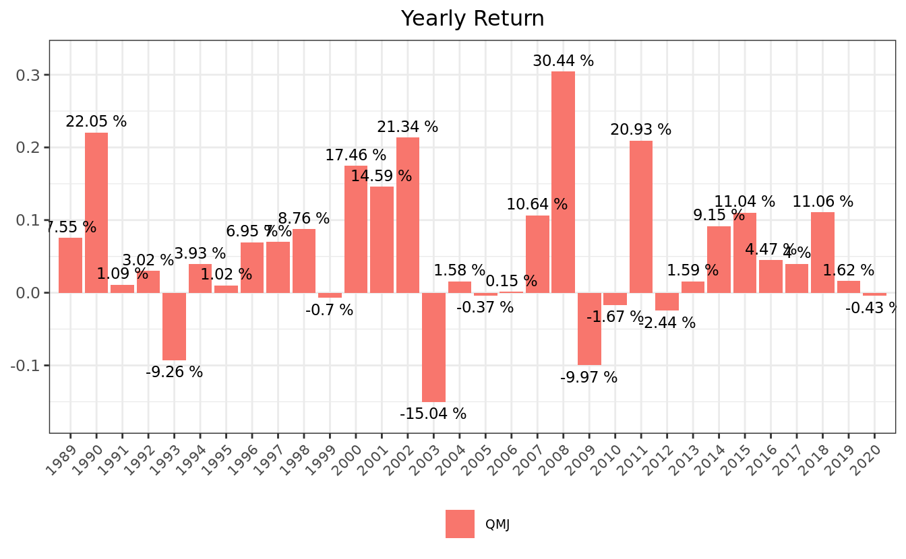
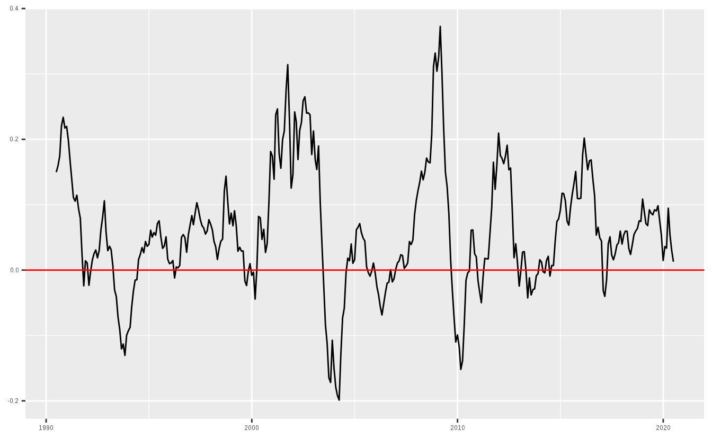

Chapter 13 성과 및 위험 평가
원하는 전략의 백테스트를 통해 포트폴리오 수익률을 구했다면, 이를 바탕으로 각종 성과 및 위험을 평가해야합니다. 아무리 성과가 좋은 전략이라도 위험이 너무 크다면 투자를 하기 부담스럽습니다. 또한 전략의 수익률이 지속적으로 감소하는 추세라면 경쟁이 치열해져 더이상 작동하지 않는 전략일 가능성도 있습니다.
본 장에서는 포트폴리오의 예시로 퀄리티 팩터를 종합적으로 고려한 QMJ(Quality Minus Junk) 팩터25의 데이터를 이용하겠습니다. QMJ 팩터란 우량성이 높은 종목들을 매수, 우량성이 낮은 종목들을 공매도한 전략을 지수의 형태로 나타낸 것입니다. 해당 팩터의 수익률을 통해 성과 및 위험을 평가해보고, 회귀분석을 통해 다른 팩터와의 관계도 살펴보도록 하겠습니다.
QMJ 팩터의 수익률은 논문 저자들의 회사인 AQR Capital Management의 Datasets26에서 엑셀 파일을 다운로드 받은 후 가공할 수도 있습니다. 그러나 해당 작업을 매번 하는 것은 지나치게 번거로우므로, R 내에서 엑셀 파일을 다운로드 받은 후 가공하도록 하겠습니다.
library(dplyr)
library(readxl)
library(xts)
library(timetk)
url = paste0('https://images.aqr.com/-/media/AQR/Documents/Insights/',
'Data-Sets/Quality-Minus-Junk-Factors-Monthly.xlsx')
tf = tempfile(fileext = '.xlsx')
download.file(url, tf, mode = 'wb')
excel_sheets(tf)## [1] "QMJ Factors" "Definition"
## [3] "Data Sources" "--> Additional Global Factors"
## [5] "MKT" "SMB"
## [7] "HML FF" "HML Devil"
## [9] "UMD" "ME(t-1)"
## [11] "RF" "Sources and Definitions"
## [13] "Disclosures"- 해당 데이터의 엑셀 url을 저장합니다.
tempfile()함수 내 .xlsx 인자를 입력함으로써, 임시로 엑셀 파일을 만들도록 합니다.download.file()함수를 통해 url 파일을 tf 파일명에 저장하도록 하며, 엑셀의 경우 바이너리 파일이므로 wb 인자를 입력합니다.readxl패키지의excel_sheets()함수를 통해 해당 엑셀의 시트명들을 확인합니다.
우리가 필요한 데이터는 수익률을 계산할 QMJ Factors, 회귀분석에 필요한 MKT, SMB, HML Devil, UMD, 무위험 이자율인 RF 시트의 데이터 입니다.
df_QMJ = read_xlsx(tf, sheet = 'QMJ Factors', skip = 18) %>% select(DATE, Global)
df_MKT = read_xlsx(tf, sheet = 'MKT', skip = 18) %>% select(DATE, Global)
df_SMB = read_xlsx(tf, sheet = 'SMB', skip = 18) %>% select(DATE, Global)
df_HML_Devil = read_xlsx(tf, sheet = 'HML Devil', skip = 18) %>% select(DATE, Global)
df_UMD = read_xlsx(tf, sheet = 'UMD', skip = 18) %>% select(DATE, Global)
df_RF = read_xlsx(tf, sheet = 'RF', skip = 18) readxl 패키지의 read_xlsx() 함수를 통해 엑셀 데이터를 읽어올 수 있으며, 시트명을 정해줄 수도 있습니다. 또한 각 시트 내 18행 까지는 데이터를 설명하는 텍스트이므로, skip 인자를 통해 해당 부분은 읽어오지 않도록 합니다. 그 후 select() 함수를 통해 날짜에 해당하는 DATE와 Global 열만을 선택해 줍니다.
df = Reduce(function(x, y) inner_join(x, y, by = 'DATE'),
list(df_QMJ, df_MKT, df_SMB, df_HML_Devil, df_UMD, df_RF)) %>%
setNames(c('DATE','QMJ', 'MKT', 'SMB', 'HML', 'UMD', 'RF')) %>%
na.omit() %>%
mutate(DATE = as.Date(DATE, "%m/%d/%Y"),
R_excess = QMJ - RF,
Mkt_excess = MKT - RF) %>%
tk_xts(date_var = DATE)inner_join()함수를 통해 DATE를 기준으로 데이터를 묶어주어야 합니다. 해당 함수는 한 번에 두개 테이블만을 선택할 수 있으므로,Reduce()함수를 통해 모든 데이터에inner_join()함수를 적용합니다.setNames()함수를 통해 열이름을 입력해줍니다.- 각 팩터별 시작시점이 다르므로
na.omit()함수를 통해 NA 데이터를 삭제해줍니다. mutate()함수를 통해 데이터를 변형해줍니다. DATE 열의 경우 mm/dd/yy의 문자열 형식이므로 이를 날짜 형식으로 변경해줍니다. QMJ 팩터 수익률에서 무위험 수익률을 차감하여 초과수익률을 구해주며, 시장 수익률에서 무위험 수익률을 차감하여 시장위험 프리미엄을 계산해줍니다.timetk패키지의tk_xts()함수를 이용해 티블 형태를 시계열 형태로 변경해주며, 인덱스는 DATE 열을 설정해줍니다. 형태 변경 후 해당 열은 자동으로 삭제됩니다.
위 과정을 통해 구한 데이터를 바탕으로 성과 및 위험을 평가하도록 하겠습니다.
13.1 결과 측정 지표
포트폴리오의 평가에서 가장 중요한 지표는 수익률과 위험입니다. 수익률은 누적수익률과 연율화 수익률, 연도별 수익률이 주요 지표이며, 위험의 경우 변동성과 낙폭이 주요 지표입니다.
이 외에도 승률, 롤링 윈도우 값 등 다양한 지표를 살펴보기도 합니다. 이러한 지표를 수식에 맞게 직접 계산할 수도 있지만, PerformanceAnalytics 패키지에서 제공하는 다양한 함수들을 이용해 편하게 계산할 수도 있습니다.
13.1.1 수익률 및 변동성
library(PerformanceAnalytics)
chart.CumReturns(df$QMJ)
먼저 chart.CumReturns() 함수를 이용해 QMJ 팩터의 누적수익률을 그래프로 나타내봅니다. 1989-07-31 부터 2019-04-30까지 장기간동안 우상향 하는 모습을 보이고 있습니다.
prod((1+df$QMJ)) - 1 # 누적수익률## [1] 4.049764mean(df$QMJ) * 12 # 연율화 수익률(산술)## [1] 0.05703643(prod((1+df$QMJ))) ^ (12 / nrow(df$QMJ)) - 1 # 연율화 수익률(기하)## [1] 0.05577976수익률 중 가장 많이보는 지표는 누적 수익률, 연율화 수익률(산술), 연율화 수익률(기하) 입니다. 각 수익률을 구하는 법은 다음과 같습니다.
- 누적 수익률: \((1+r_1) \times (1+r_2) \times \dots \ \times (1+r_n) = \{\prod_{i=1}^n(1+r_i)\}-1\),
- 연율화 수익률(산술): $ scale $
- 연율화 수익률(기하): \(\{\prod_{i=1}^n(1+r_i)\}^{scale / Days} - 1\)
먼저 누적 수익률은 각 수익률에 1을 더한 값을 모두 곱한 후 1을 빼면 됩니다. 연율화 수익률(산술)의 경우 단순히 수익률의 평균을 구한 후, 연율화를 위한 조정값(scale)을 곱해주면 됩니다. 데이터가 일간일 경우 조정값은 252, 주간일 경우 52, 월간일 경우 12 입니다. 현재 데이터는 월간 기준이므로 조정값은 12가 됩니다.
마지막으로 연율화 수익률(기하)의 경우 각 수익률에 1을 더한 값의 곱을 구한 후, 연율화를 위해 승수를 곱한 후 1을 빼주면 되며, \(Days\)는 시계열의 관측 기간입니다.
Return.cumulative(df$QMJ) # 누적수익률## QMJ
## Cumulative Return 4.049764Return.annualized(df$QMJ, geometric = FALSE) # 연율화 수익률(산술)## QMJ
## Annualized Return 0.05703643Return.annualized(df$QMJ) # 연율화 수익률(기하)## QMJ
## Annualized Return 0.05577976수식에 맞게 값을 입력하여 계산할 수도 있지만, 함수를 이용할 경우 더욱 손쉽게 계산이 가능하며 실수를 할 가능성도 줄어들게 됩니다. 누적 수익률은 Return.cumulative() 함수를 통해, 연율화 수익률(산술)은 Return.annualized() 함수 내 geometric 인자를 FALSE로 선택해줌으로써, 연율화 수익률(기하)는 Return.annualized() 함수를 통해 계산이 가능합니다. 수식으로 계산한 값과 함수를 통해 계산한 값을 비교하면 동일함이 확인됩니다.
sd(df$QMJ) * sqrt(12) # 연율화 변동성## [1] 0.07285063StdDev.annualized(df$QMJ) # 연율화 변동성## QMJ
## Annualized Standard Deviation 0.07285063SharpeRatio.annualized(df$QMJ, Rf = df$RF, geometric = TRUE)## QMJ
## Annualized Sharpe Ratio (Rf=2.8%) 0.3644028위험으로 가장 많이 사용되는 지표는 변동성입니다. 연율화 변동성의 경우 sd() 함수를 통해 변동성을 계산한 후 조정값을 곱해주어 계산이 됩니다. 그러나 StdDev.annualized() 함수를 사용하여 더욱 쉽게 계산할 수도 있습니다.
수익을 위험으로 나누어 위험 조정 수익률을 보는 지표가 샤프지수 입니다. 해당 지수는 \(\frac {R_i - R_f}{\sigma_i}\)로 계산되며, 분자에는 포트폴리오 수익률에서 무위험 수익률을 차감한 값이, 분모에는 포트폴리오의 변동성이 오게 됩니다.
SharpeRatio.annualized() 함수를 이용할 경우 포트폴리오 수익률에서 무위험 수익률을 차감한 값을 연율화로 변경한 후, 연율화 변동성으로 나누어 샤프지수를 계산합니다. geometric를 TRUE로 설정할 경우 기하평균 기준 연율화 수익률을, FALSE로 설정할 경우 산술평균 기준 연율화 수익률을 계산합니다.
13.1.2 낙폭과 최대낙폭
먼저 낙폭(Drawdown)은 수익률이 하락한 후 반등하기 전까지 얼마나 하락하였는지를 나타냅니다. 최대낙폭(Maximum Drawdown)은 이러한 낙폭 중 가장 값이 큰 값으로써, 최고점에 최저점까지 얼마나 손실을 보는지를 나타냅니다. 투자를 함에 있어 수익률이 하락하는 것은 어쩔 수 없지만, 최대낙폭이 지나치게 큰 전략에 투자하는 것은 매우 위험한 선택이 될 수 있습니다.

Figure 5.1: 낙폭과 최대낙폭
table.Drawdowns(df$QMJ)## From Trough To Depth Length To Trough Recovery
## 1 2002-10-31 2004-01-31 2008-08-31 -0.2118 71 16 55
## 2 2009-03-31 2009-09-30 2012-05-31 -0.2012 39 7 32
## 3 1992-11-30 1993-08-31 1997-01-31 -0.1404 51 10 41
## 4 1998-10-31 1999-04-30 2000-05-31 -0.0868 20 7 13
## 5 2012-08-31 2013-01-31 2014-10-31 -0.0665 27 6 21maxDrawdown(df$QMJ)## [1] 0.2118214chart.Drawdown(df$QMJ)
이러한 낙폭에 대한 지표들은 손으로 계산하기 번거롭지만, 패키지 내 함수를 사용한다면 매우 손쉽게 계산할 수 있습니다.
먼저 table.Drawdowns() 함수를 이용하면 역대 낙폭이 가장 심했던 순서대로 낙폭 정도, 하락 기간과 상승 기간, 원금 회복 기간 등을 테이블로 나타내줍니다. maxDrawdown() 함수는 포트폴리오의 최대 낙폭을 계산해주며, chart.Drawdown() 함수는 낙폭 만을 그래프로 그려줍니다.
CalmarRatio(df$QMJ)## QMJ
## Calmar Ratio 0.2633339위험 조정 수익률 중 사용되는 지표 중 칼마 지수도 있습니다. 해당 지표는 연율화 수익률을 최대낙폭으로 나눈 값으로써, 특히나 안정적인 절대 수익률을 추구하는 헤지펀드에서 많이 참조하는 지표입니다.
13.1.3 연도별 수익률
apply.yearly(df$QMJ, Return.cumulative) %>% head()## QMJ
## 1989-12-31 0.07555061
## 1990-12-31 0.22043182
## 1991-12-31 0.01087825
## 1992-12-31 0.02998013
## 1993-12-31 -0.09243790
## 1994-12-31 0.03969672apply.yearly() 함수 내 계산함수를 Return.cumulative로 설정할 경우, 연도 별 수익률을 계산할 수 있습니다.
library(lubridate)
library(tidyr)
library(ggplot2)
R.yr = apply.yearly(df$QMJ, Return.cumulative) %>%
fortify.zoo() %>%
mutate(Index = year(Index)) %>%
gather(key, value, -Index) %>%
mutate(key = factor(key, levels = unique(key)))
ggplot(R.yr, aes(x = Index, y = value, fill = key)) +
geom_bar(position = "dodge", stat = "identity") +
ggtitle('Yearly Return') +
xlab(NULL) +
ylab(NULL) +
theme_bw() +
scale_y_continuous(expand = c(0.03, 0.03)) +
scale_x_continuous(breaks = R.yr$Index,
expand = c(0.01, 0.01)) +
theme(plot.title = element_text(hjust = 0.5,
size = 12),
legend.position = 'bottom',
legend.title = element_blank(),
legend.text = element_text(size=7),
axis.text.x = element_text(angle = 45, hjust = 1, size = 8),
panel.grid.minor.x = element_blank() ) +
guides(fill = guide_legend(byrow = TRUE)) +
geom_text(aes(label = paste(round(value * 100, 2), "%"),
vjust = ifelse(value >= 0, -0.5, 1.5)),
position = position_dodge(width = 1), size = 3)
apply.yearly() 함수를 통해 계산한 연도별 수익률에 ggplot() 함수를 응용할 경우 막대그래프로 나타낼 수도 있으며, 시각화를 통해 포트폴리오의 수익률 추이가 더욱 쉽게 확인됩니다.
13.1.4 승률 및 롤링 윈도우 값
승률이란 포트폴리오가 벤치마크를 대비 높은 성과를 기록한 비율을 의미하며, \(\frac {(포트폴리오\,수익률 > 벤치마크)\,일수}{전체\,기간}\)을 통해 계산됩니다. 벤치마크가 S&P 500 지수, KOSPI 200 지수처럼 구체적으로 존재하는 경우도 있지만, 절대수익을 추구하는 경우에는 이러한 벤치마크가 0 혹은 무위험 수익률이 됩니다.
UpsideFrequency(df$QMJ, MAR = 0)## [1] 0.5949721UpsideFrequency() 함수는 벤치마크 대비 승률을 계산해줍니다. MAR 인자는 0이 기본값으로 설정되어 있으며, 원하는 벤치마크가 있을시 이를 입력해주면 됩니다. QMJ 팩터는 월간 기준 수익률이 플러스를 기록했던 비율이 59.5% 입니다.
위에서 구한 각종 지표들은 투자자가 시작부터 현재까지 투자를 하였다는 전제하에 계산됩니다. 그러나 투자를 시작하는 시점은 사람마다 다르기에, 무작위 시점에 투자했을 시 향후 n개월 후 승률 혹은 연율화 수익률 등을 계산할 필요도 있습니다. 이러한 기법을 롤링 윈도우라 합니다.
roll_12 = df$QMJ %>% apply.monthly(., Return.cumulative) %>%
rollapply(., 12, Return.annualized) %>% na.omit() %>%
UpsideFrequency()
roll_24 = df$QMJ %>% apply.monthly(., Return.cumulative) %>%
rollapply(., 24, Return.annualized) %>% na.omit() %>%
UpsideFrequency()
roll_36 = df$QMJ %>% apply.monthly(., Return.cumulative) %>%
rollapply(., 36, Return.annualized) %>% na.omit() %>%
UpsideFrequency()
roll_win = cbind(roll_12, roll_24, roll_36)
print(roll_win)## roll_12 roll_24 roll_36
## [1,] 0.7636888 0.7910448 0.8668731롤링 윈도우 승률은 무작위 시점에 투자했을 시 미래 n기간 동안의 연율화 수익률을 구하고, 해당 값이 벤치마크 대비 수익이 높았던 비율을 계산합니다. 만일 12개월 롤링 윈도우 승률이 100% 라면, 어떠한 시점에 투자하여도 12개월 후에는 언제나 벤치마크를 이겼음을 의미합니다. 반면 아무리 연율화 수익률이 높은 전략도 이러한 롤링 윈도우 승률이 지나치게 낮다면, 단순히 한번의 운으로 인해 수익률이 높아보이는 것처럼 보일 수 있습니다.
함수를 이용해 해당 값을 구하는 과정은 다음과 같습니다.
apply.*()함수를 이용해 원하는 기간 수익률로 변경하며, 위 예제에서는 월간 수익률로 변경했습니다.rollapply()함수를 통해 원하는 기간의 롤링 윈도우 통계값을 구해줍니다. 각각 12개월, 24개월, 36개월 기간에 대해Return.annualized()함수를 통해 연율화 수익률을 계산해줍니다.- 계산에 필요한 n기간 동안은 수익률이 없으므로
na.omit()을 통해 삭제해줍니다. UpsideFrequency()함수를 통해 승률을 계산해 줍니다.
해당 과정을 통해 계산된 12개월, 24개월, 36개월 롤링 승률은 각각 76.37%, 79.1%, 86.69%이며, 투자 기간이 길어질수록 승률이 높아짐이 확인됩니다.
df$QMJ %>% apply.monthly(., Return.cumulative) %>%
rollapply(., 12, Return.annualized) %>% na.omit() %>%
fortify.zoo() %>%
ggplot(aes(x = Index, y = QMJ)) +
geom_line() +
geom_hline(aes(yintercept = 0), color = 'red') +
xlab(NULL) + ylab(NULL)
롤링 윈도우 연율화 수익률 역시 매우 중요한 지표입니다. 해당 값이 지속적으로 하락할 경우, 전략이 더이상 동작하지 않는 것인지 혹은 가장 험난한 시기를 지났기에 인내심을 갖고 기다려야 할지 판단해야 합니다.
13.2 팩터 회귀분석 및 테이블로 나타내기
포트폴리오 수익률에 대한 성과 평가만큼 중요한 것이, 수익률이 어디에서 발생했는가에 대한 요인을 분석하는 것입니다. 베타를 통한 개별 주식과 주식시장과의 관계를 시작으로, 수익률을 설명하기 위한 여러 모형들이 개발되고 발표되었습니다. 그 중 일반적으로 많이 사용되는 모형은 기존의 CAPM에 사이즈 팩터(SMB), 밸류 팩터(HML)를 추가한 파마-프렌치의 쓰리팩터 모형, 그리고 모멘텀 팩터(UMD)를 더 추가한 카하트의 포팩터 모형입니다.
QMJ 팩터를 위 4개 팩터에 회귀분석한 결과를 토대로, 퀄리티 팩터의 수익률에 대한 요인 분석을 해보도록 하겠습니다.
reg = lm(R_excess ~ Mkt_excess + SMB + HML + UMD, data = df)
summary(reg)##
## Call:
## lm(formula = R_excess ~ Mkt_excess + SMB + HML + UMD, data = df)
##
## Residuals:
## Min 1Q Median 3Q Max
## -0.037572 -0.007304 -0.000242 0.007702 0.060886
##
## Coefficients:
## Estimate Std. Error t value Pr(>|t|)
## (Intercept) 0.0029406 0.0007164 4.104 5.04e-05 ***
## Mkt_excess -0.2774942 0.0166597 -16.657 < 2e-16 ***
## SMB -0.3641118 0.0363016 -10.030 < 2e-16 ***
## HML -0.1296454 0.0341438 -3.797 0.000172 ***
## UMD 0.0659894 0.0267169 2.470 0.013985 *
## ---
## Signif. codes: 0 '***' 0.001 '**' 0.01 '*' 0.05 '.' 0.1 ' ' 1
##
## Residual standard error: 0.01261 on 353 degrees of freedom
## Multiple R-squared: 0.6428, Adjusted R-squared: 0.6388
## F-statistic: 158.8 on 4 and 353 DF, p-value: < 2.2e-16먼저 우리가 구한 데이터를 통해 다음과 같은 회귀분석을 실시합니다. 즉 QMJ 팩터의 초과수익률을 시장위험 프리미엄, 사이즈 팩터, 밸류 팩터, 모멘텀 팩터에 회귀분석 합니다.
\[QMJ - R_f= \beta_m \times \ [R_m - R_f] + \beta_{SMB} \times R_{SMB} + \beta_{HML} \times R_{HML} + \beta_{UMD} \times R_{UMD}\]
lm() 함수 내에서 R_excess는 \(QMJ - R_f\)와 동일하며, Mkt_excess는 \(R_m - R_f\)와 동일합니다. 베타의 절대값이 크다는 의미는 QMJ 팩터의 수익률이 해당 팩터와의 관계가 높다는 의미이며, 양수일 경우에는 양의 관계가, 음수일 경우에는 음의 관계가 높다는 의미입니다. 또한 t value 혹은 P value를 통해 관계가 얼마나 유의한지도 확인할 수 있습니다.
- 시장 베타에 해당하는 \(\beta_m\)은 -0.277로 음수값을 보이며, 우량주의 경우 베타가 낮다고 볼 수 있습니다. 또한 t-value가 -16.657로 충분히 유의합니다.
- 사이즈 베타에 해당하는 \(\beta_{SMB}\)는 -0.364로써 역시나 음수값을 보입니다. 즉 우량주는 주로 대형주, 비우량주는 주로 소형주일 가능성이 있습니다. t-value 역시 -10.03로 충분히 유의합니다.
- 밸류 베타에 해당하는 \(\beta_{HML}\)은 -0.13로써 이 역시 음수값을 보입니다. 즉 퀄리티와 밸류 간의 관계에서 살펴본것 처럼, 우량주는 주로 밸류가 높은 경향이 있습니다. t-value 역시 -3.797로 유의합니다.
- 모멘텀 베타에 해당하는 \(\beta_{UMD}\)는 0.066로 양의 관계가 있습니다. 즉 우량주는 주로 과거 수익률이 높았던 주식, 비우량주는 과거 수익률이 낮았던 주식인 경향이 있습니다. t-value는 2.47로 유의하다고 볼 수 있습니다.
- 이러한 설명변수를 제외하고도 월간 초과수익률에 해당하는 계수값이 0.003이며, t-value는 4.104로 유의합니다. 즉, 퀄리티 팩터는 기존의 여러 팩터들로 설명되지 않는 새로운 팩터라고도 볼 수 있습니다.
library(broom)
tidy(reg)## # A tibble: 5 x 5
## term estimate std.error statistic p.value
## <chr> <dbl> <dbl> <dbl> <dbl>
## 1 (Intercept) 0.00294 0.000716 4.10 5.04e- 5
## 2 Mkt_excess -0.277 0.0167 -16.7 2.23e-46
## 3 SMB -0.364 0.0363 -10.0 5.36e-21
## 4 HML -0.130 0.0341 -3.80 1.72e- 4
## 5 UMD 0.0660 0.0267 2.47 1.40e- 2broom() 패키지의 tidy() 함수를 사용하면 분석 결과 중 계수에 해당하는 값만을 요약해서 볼 수 있습니다.
library(stargazer)
stargazer(reg, type = 'text', out = 'data/reg_table.html')##
## ===============================================
## Dependent variable:
## ---------------------------
## R_excess
## -----------------------------------------------
## Mkt_excess -0.277***
## (0.017)
##
## SMB -0.364***
## (0.036)
##
## HML -0.130***
## (0.034)
##
## UMD 0.066**
## (0.027)
##
## Constant 0.003***
## (0.001)
##
## -----------------------------------------------
## Observations 358
## R2 0.643
## Adjusted R2 0.639
## Residual Std. Error 0.013 (df = 353)
## F Statistic 158.811*** (df = 4; 353)
## ===============================================
## Note: *p<0.1; **p<0.05; ***p<0.01stargazer 패키지를 사용하면, 회귀분석 결과를 논문에서 많이 사용되는 테이블 형식으로 손쉽게 출력과 저장을 할 수 있습니다.테이블이 출력과 함께 data 폴더 내에 reg_table.html 이름으로 html 파일 역시 저장이 됩니다.
Asness, C. S., Frazzini, A., & Pedersen, L. H. (2019). Quality minus junk. Review of Accounting Studies, 24(1), 34-112.↩
https://www.aqr.com/Insights/Datasets/Quality-Minus-Junk-Factors-Monthly↩